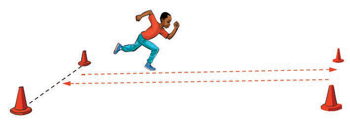

(b) Zoezi la mbio za kwenda na kurudi
Mazoezi ya mbio za kwenda na kurudi ni mazoezi mazito ya viungo yanayohusisha kukimbia kutoka uelekeo mmoja hadi mwingine na kurudi tena katika uelekeo wa awali. Mazoezi haya husaidia kuboresha kasi na ustahimilivu wa mchezaji.
Namna ya kufanya zoezi la mbio za kwenda na kurudi:
(i)
Kimbia kutoka alama moja hadi nyingine, ukigusa chini kwa mkono kila unavyobadilisha mwelekeo kama inavyoonekana kwenye Kielelezo namba 6; na
(ii)
Rudia mara 5 hadi 10 kwa seti 3.

(c) Kuruka kwa miguu miwili
Zoezi hili huongeza nguvu na kasi ya kuruka. Hii ni muhimu katika kucheza michezo mbalimbali kama vile netiboli na mpira wa miguu.
Namna ya kufanya zoezi la kuruka kwa miguu miwili:
(i)
Simama wima, kisha kunja magoti kidogo;
(ii)
Ruka mbele kwa nguvu na shuka kwa miguu miwili;
(iii)
Rudia mara 10 kwa seti 3 kwa kufuata hatua (i-ii) zilizoainishwa kama zinavyoonekana katika Kielelezo namba 7.